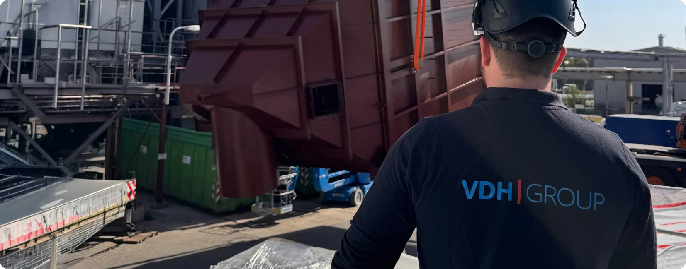
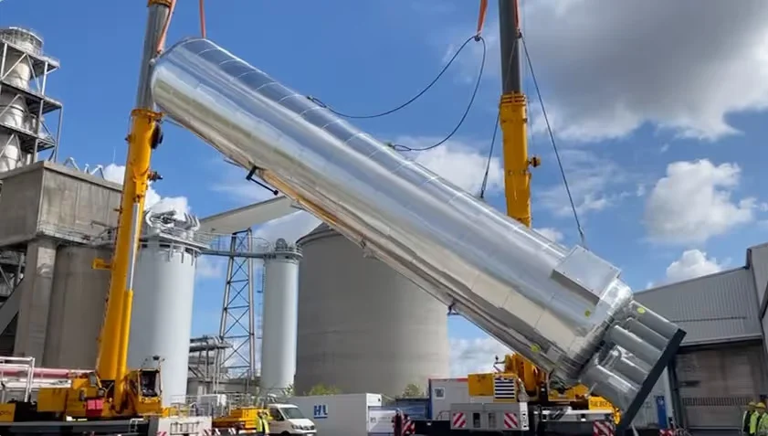
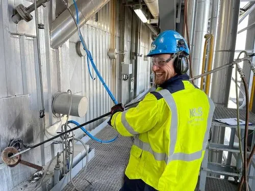
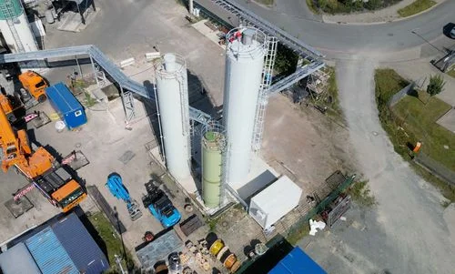
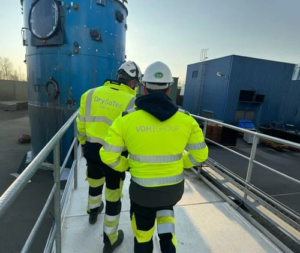
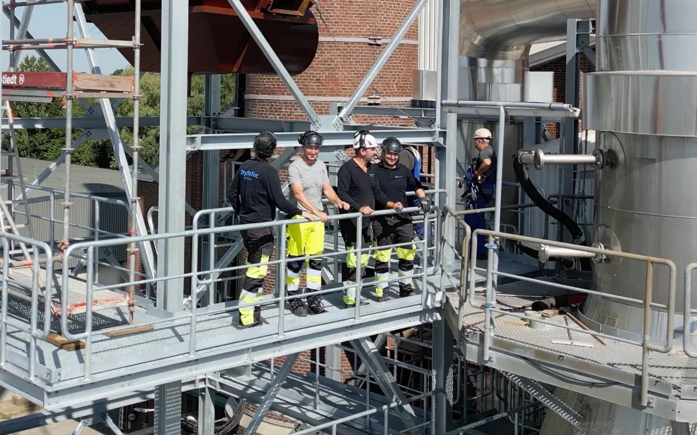

Technische Fachkräfte
Wenn Schnittstellen, Termine und Qualität zusammenkommen, braucht es starke technische Rollen. Wir stellen Führung, Koordination und Planungskompetenz, damit Ihr Projekt stabil läuft – von der Arbeitsvorbereitung bis zur Baustellensteuerung.
Schweißkompetenz – wenn Qualität messbar wird
Schweißarbeiten sind im industriellen Umfeld ein entscheidender Qualitäts- und Sicherheitsfaktor. Deshalb setzen wir auf Verfahren und Know-how, die auch bei anspruchsvollen Bedingungen funktionieren – in der Werkstatt wie auf der Baustelle:
WIG
MIG/MAG
E-hand
Orbitalschweißen
Pipeline-Fallnähte (erdverlegt)
Werkstoffe (Auszug): P91 / P92
Unsere Schweißer sind zertifiziert – und sofort einsatzbereit im gesamten Industrieumfeld.
Leistungsstark vom Einzelprojekt bis zur Großmontage
Wir realisieren Montageprojekte im industriellen Umfeld – zuverlässig und fachgerecht. Als Teil der VDH Group bündeln wir Anlagenbauerfahrung mit qualifizierten Fachkräften vor Ort.

Rohrleitungs- und Behälterarbeiten
Für Rohrleitungs- und Behälterarbeiten stellen wir erfahrene Monteure und – bei Bedarf – Schweißkompetenz für anspruchsvolle Anforderungen. Wir arbeiten abgestimmt auf Medien, Werkstoffe und Einsatzbedingungen im industriellen Umfeld. Das reduziert Reibungsverluste an Schnittstellen und sorgt für eine fachgerechte Umsetzung vor Ort.
Rohrleitungs- und Behälterarbeiten
Für Rohrleitungs- und Behälterarbeiten stellen wir erfahrene Monteure und – bei Bedarf – Schweißkompetenz für anspruchsvolle Anforderungen. Wir arbeiten abgestimmt auf Medien, Werkstoffe und Einsatzbedingungen im industriellen Umfeld. Das reduziert Reibungsverluste an Schnittstellen und sorgt für eine fachgerechte Umsetzung vor Ort.


Rohrleitungs- und Behälterarbeiten
Für Rohrleitungs- und Behälterarbeiten stellen wir erfahrene Monteure und – bei Bedarf – Schweißkompetenz für anspruchsvolle Anforderungen. Wir arbeiten abgestimmt auf Medien, Werkstoffe und Einsatzbedingungen im industriellen Umfeld. Das reduziert Reibungsverluste an Schnittstellen und sorgt für eine fachgerechte Umsetzung vor Ort.
Rohrleitungs- und Behälterarbeiten
Für Rohrleitungs- und Behälterarbeiten stellen wir erfahrene Monteure und – bei Bedarf – Schweißkompetenz für anspruchsvolle Anforderungen. Wir arbeiten abgestimmt auf Medien, Werkstoffe und Einsatzbedingungen im industriellen Umfeld. Das reduziert Reibungsverluste an Schnittstellen und sorgt für eine fachgerechte Umsetzung vor Ort.


Rohrleitungs- und Behälterarbeiten
Für Rohrleitungs- und Behälterarbeiten stellen wir erfahrene Monteure und – bei Bedarf – Schweißkompetenz für anspruchsvolle Anforderungen. Wir arbeiten abgestimmt auf Medien, Werkstoffe und Einsatzbedingungen im industriellen Umfeld. Das reduziert Reibungsverluste an Schnittstellen und sorgt für eine fachgerechte Umsetzung vor Ort.